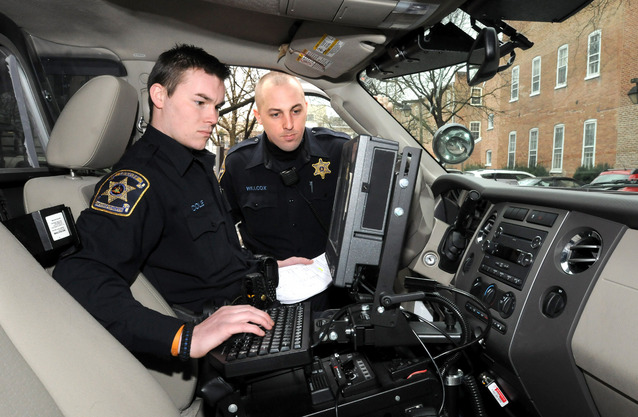

Computers
Computers in the King County Police Department are used for a variety of tasks. One task that requires the use of computers is accessing the computer aided dispatch. Computers are needed to access the dashboard and modify/add new dispatch events to the system. They are also used to run software that matches the incident location against the geofile created by the agency when the software was first installed. The geofile is a database of standardized locations, including specific house numbers and streets names, commonplace names (Jackson Park), and intersections. The geofile ensures that locations are within the jurisdiction, within a valid block number range, and are consistently entered (which assists in later searches). Without computers, dispatchers would have to utilize a file system combined with dispatch calls to officers.
Computers are also used to access and configure the record management system. The record management system, or RMS, handles the creation, receipt, maintenance, use and disposition of records, including the processes for capturing and maintaining evidence of and information about business activities and transactions in the form of records. Without computers to help configure the RMS, the police department would have to revert to a file system for all record management requests.
There are also King County Police Department employees that use their computers from home to access files from work, which open up a host of various computer related vulnerabilities. Protecting the computers that service King County Police Department is essential to mitigating risk.

Threats
Keystroke Logging
Keystroke logging involves an attacker discreetly recording the keys that another user presses on a keyboard. This type of attack can be used to log passwords entered, usernames, web addresses typed and much more. The majority of keyloggers are the result of some kind of intrusion, such as a virus that found its way onto the users computer or from an attacker using physical hardware that sits in between the user's keyboard and computer.
Keystroke logging in the King County Police Department could cause lots of private data to be recorded, potentially resulting in a major information leak.
Viruses
Computer viruses are a prevalent problem in the greater sphere of computer security. Viruses come in many shapes and sizes and can have a number of different effects on a computer. Some viruses will find their way into a computer's file system, where they will replicate and shut down key computer functions. Other viruses will be more discreet and remain hidden while they replicate and jump to other connected devices.
Keeping King County Police Department computers free of computer viruses will help provide the greatest security for the department as a whole.
Mitigations
Limited User Mode
For users trying to access their accounts from home, you may be an administrator on your personal computer. Having your computer run in admin mode all of the time can open up the possibility of spyware being installed on your computer.
Running your computer in limited user mode for everyday tasks can help prevent attackers from abusing your administrative rights and installing spyware in the background.
Antivirus
Having a good antivirus on your computer can help prevent many of the common forms of malware that find their way onto your computer. Many of the free antiviruses that come packaged with your computer are not sufficient in stopping the installation of malware on your computer because the list of viruses is everchanging.
For a larger department, like King County PD, it would be smarter to choose a paid antivirus software that will catch more intrusions.
It is also important to configure your antivirus to run frequently in order to catch new intrusions that happen throughout the day and find patterns in blocked attacks.
Update Your Computer
For many operating systems, such as Windows and Mac, there are frequent updates that are pushed out to all users. These updates can include new features added to the operating system and minor changes to the UI, but many of the updates are vital security updates. Ignoring the messages to update your operating system can put your computer at serious risk if not attended to quickly
Either configure your computer to make these updates automatically or make the updates manually when you first see the notifications.